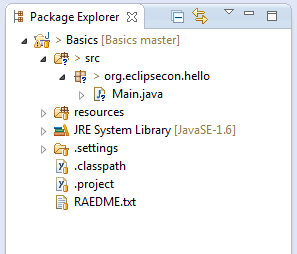
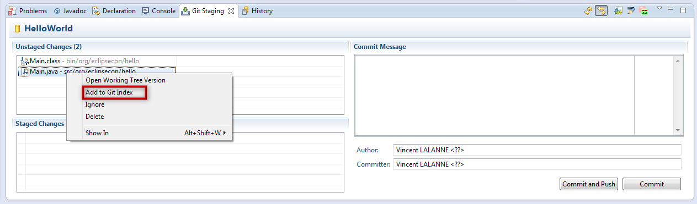
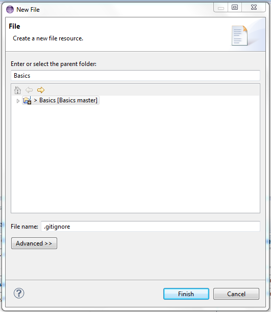
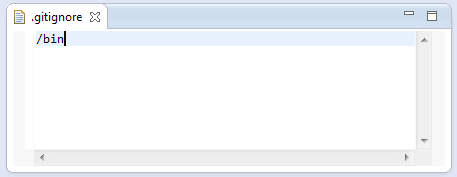
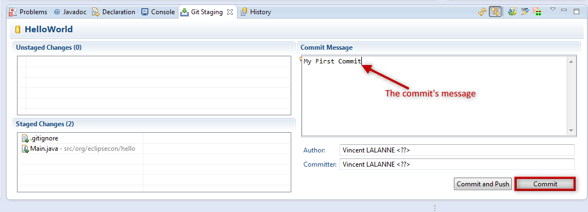

A first commit
- Close opened projects and open the Basics project
The project contains an already initialized Git repository and Eclipse Java project
 - Open the Git Staging view in the Git perspective
- Add the Main.java file to the staged changes
Main.java > Add to Git Index
Note
You can remove and add files from the Staged Changes through drag and drop.Note 2
All the commands visible in the Git Staging are also availble in the explorers. - Create a new
.gitignorefile in the project root:Basics > New > File.
 - Add
/binto this file to ignore all files in folderbin.
Note
The EGitIgnorecommand, creates.gitignorefiles at various level of the Working Tree. It is cleaner to add files manually to a central.gitgnore. - Return to the Git Staging view
- Add the new .gitignore file to the staged changes
- Enter a commit message
- Press
Commit
